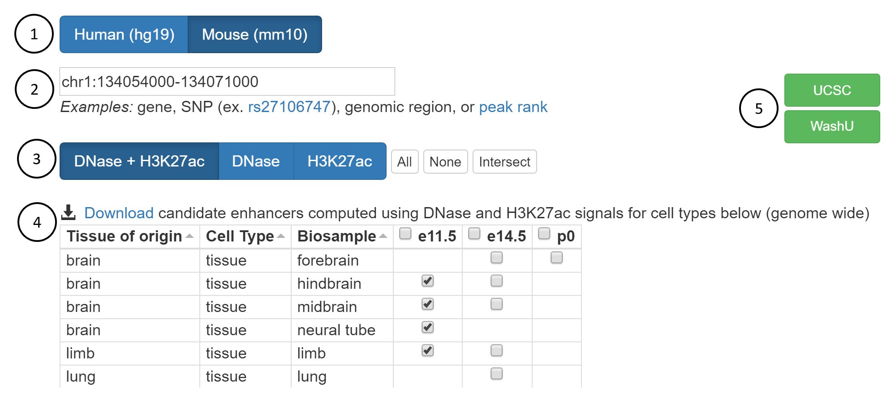

Tutorial

-

Select Genome
Genome: mm10
-

Enter gene, SNP, genomic coordinate, or rank
genomic region: chr1:134054000-134071000
-

Choose assays used to determine enhancer-like elements
assays: DNase + H3K27ac
-

Select cell types of interest
cell types: hindbrain, midbrain, neural tube, and lung
-

Display on genome browser
UCSC
ENCODE Encyclopedia Exercises
Exercise #1
You are a graduate student working on the mechanistic role and therapeutic potential of microRNA-122 (MIR122) in alcoholic liver disease. Are there any enhancers nearby that you could potentially study?
There appear to be several enhancer-like regions within 1Mb of MIR122. Visualize on Genome Browser